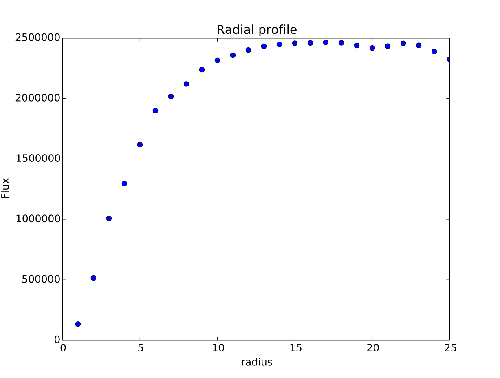
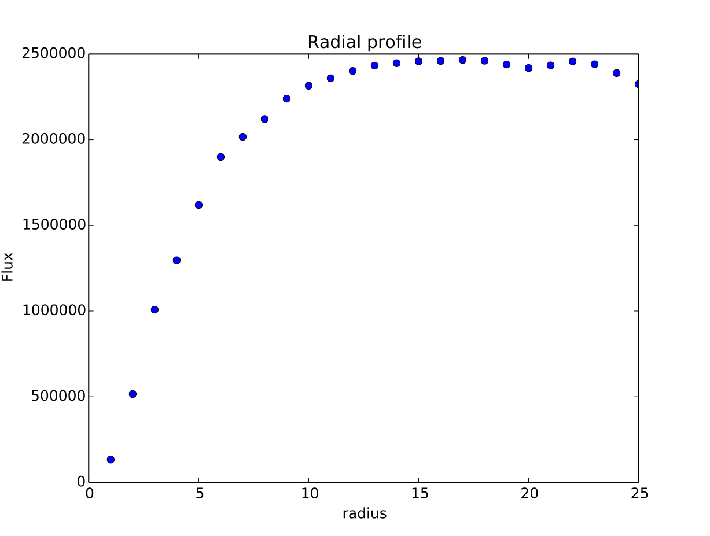
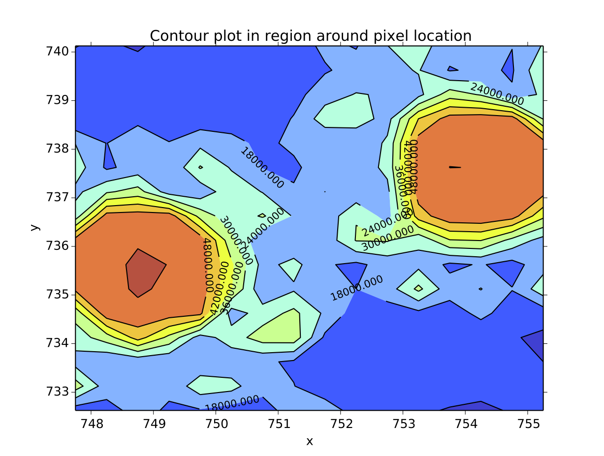
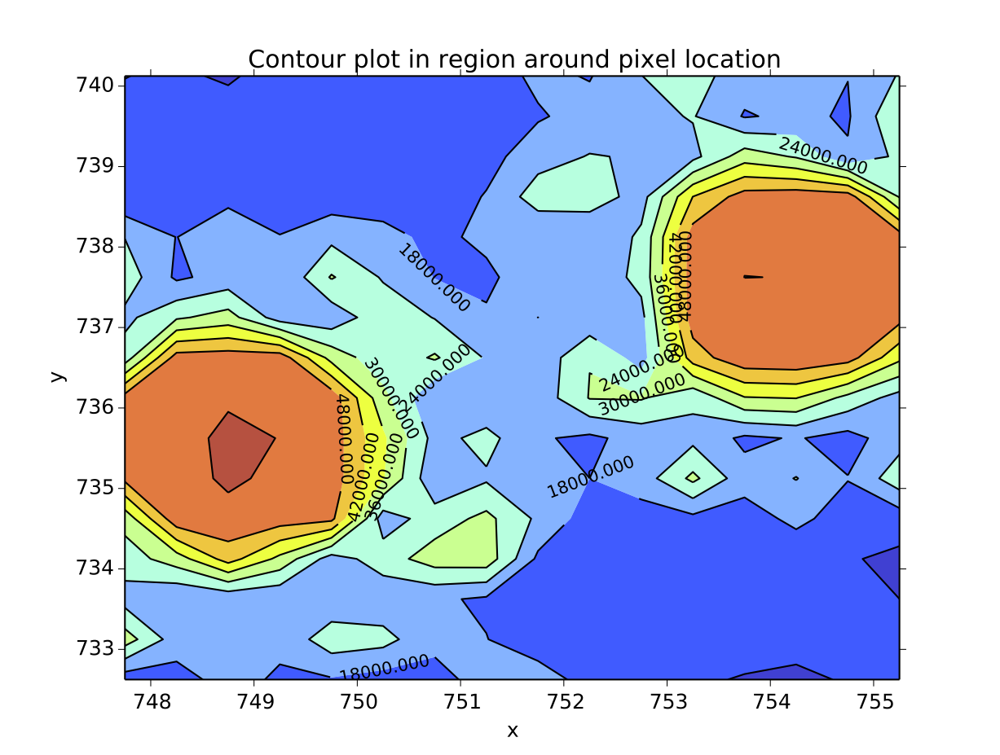
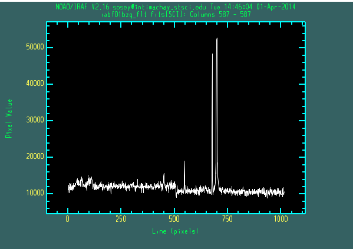
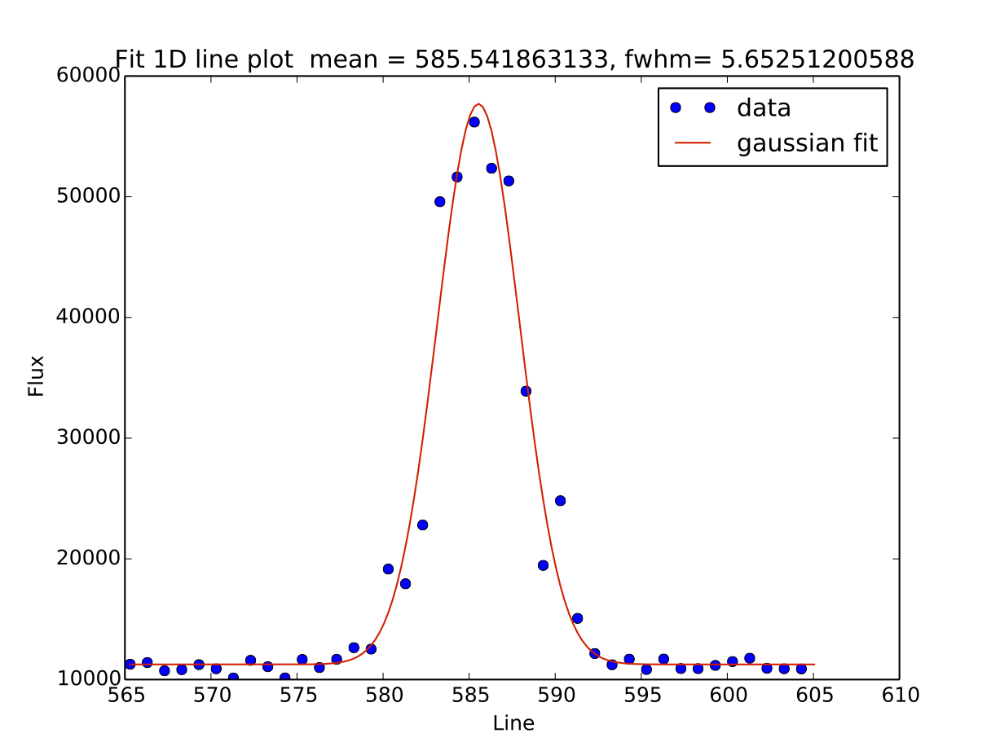
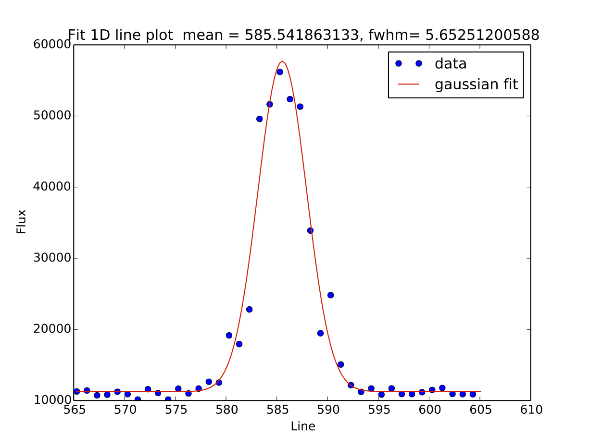
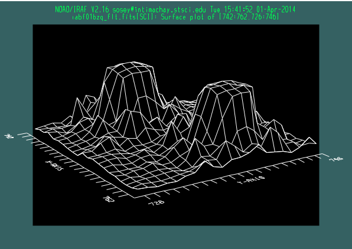

Introduction¶
imexam is meant as a replacement for the IRAF imexamine task. You should be able to perform all of the important functions that imexamine provided in IRAF, but you also gain the power and flexibility of python and matplotlib.
It currently provides display support with a DS9 window, either one you already have open, or one that imexam explicitly opens, and communicates through the XPA messaging system. The module is designed to accept other display devices in the future (for example Ginga)
Note
It is important to know if you have XPANS installed on your machine and available through your PATH. XPANS is the XPA Name Server, it keeps track of all the open socket connections for DS9 and provides a reference for their names. If you DO NOT have XPANS installed, then imexam will still work, but you should either start the DS9 window after importing imexam through the imexam.connect() interface, OR after you start DS9 from the shell, make note of the XPA_METHOD address in the File->Information dialog and use that in your call to connect: window=imexam.connect(XPA_METHOD) so that communication with the correct socket is established. As a convenience, a full installation of the XPA software is packaged with this module. You may choose whether or not to make use of this. There are lines in the setup.py file which are commented out, removing these will compile the XPA software during the full imexam installation and place a copy of the xpans executable in your scripts directory.
You can access this help file on your locally installed copy of the package by using the imexam.display_help() call, which will display the help in your web browser.
Note
All information returned from this module should be considered an estimate of the actual refined result, more precise analysis of the data should be performed for verification before publication.
Installation¶
These are some tips on installing the package, or tracking down problems you might be having during or after installation.
imexam can be installed from the source code in the normal python fashion:
python setup.py install
If you want to have access to the photometry features of the imexam analysis, download and install photutils - one of the astropy associated packages. It can be found here: https://github.com/astropy
If photutils is not installed, imexam should issue a nice statement saying that the photometry options are not available upon import, and any time an analysis key is pressed during the imexam() function loop.
imexam displays plots using matplotlib, if you find that no windows are popping up after installation it’s probably the backend that was loaded. One quick way to get things started is to start ipython with the –pylab option:
ipython --pylab
>import imexam
Usage¶
imexam is a class based library. The user creates an object which is tied to a specific image viewing window, such as a DS9 window. In order to interact with multiple windows the user must create multiple objects. Each object stores all the relevent information about the window and data with which it is associated. For example, in order to open a new DS9 window and use the object “window” to control it, you would issue the commmand:
window=imexam.connect()
“window” now has associated methods to view, manipulate and analyze data in the DS9 session. When you start the connection, you also have the option of specifying a currently open DS9 window using the target keyword. This keyword can contain the name, the actual text name that you gave the window, or the address of the window.
The address of the window can be found in the File->XPA->Information menu item, is stored as “XPA_METHOD”, and is of the form “82a7e75f:58576” for inet sockets, and a filepath for local sockets.
window=imexam.connect("82a7e75f:58576")
When imexam starts up a DS9 window itself, it will create a local socket by default, the default connection type for DS9 is inet. However, imexam will first check to see if XPA_METHOD was set in your environment and default to that option. If you are experiencing problems, or you don’t have an internet connection (the two might be related because the XPA structures inet sockets with an ip address), you can set your environment variable XPA_METHOD to ‘local’ or ‘localhost’. This will cause imexam to start a local(unix) socket which will show an “XPA_METHOD” that is a filename on your computer. imexam defaults to a local socket connection to allow for users who do not have the XPA installed on their machine or available on their PATH. The full XPA source code is installed with the imexam package, and the xpans executable is copied to the scripts directory of your local installation. If you don’t have the XPA on your path, simply point it to that location, or copy xpans to the location of your choice, and make sure you update your PATH. Any time DS9 is started it will start up the xpa nameserver automatically. Then all the xpans query options will be available through imexam. imexam itself uses cython wrappers around the get and set methods from the XPA for it’s communication which is why the fully installed XPA is not needed.
If you wish to open multiple DS9 windows outside of imexam, then it’s recommended that you give each a unique name. If you’ve forgotten which window had which name, you can look in the same XPA info menu and use the “XPA_NAME” specified there. If you haven’t given them a unique name, you can list the available windows using imexam.list_active_ds9() and specify their unique address.
imexam will attempt to find the current location of the DS9 executable by default, but you may also supply the path to the DS9 executable of your choice using the path keyword. The fully optional calling sequence is:
imexam.connect(target="",path=None,viewer="ds9",wait_time=10)
In order to return a list of the current DS9 windows that are running, issue the command:
imexam.list_active_ds9()
In order to turn logging to a file on, issue the command: window.setlog(). The log will be saved to the default filename imexam_session.log in the current directory unless you give it another filename to use. Here’s an example of how that might work:
import imexam
window=imexam.connect('ds9')
window.setlog() <-- turns on logging with default filename
window.imexam() <-- all output will be logged to the file and displayed on the screen
window.setlog(on=False) <-- turns off logging to file
window.setlog(filename='my_other_log.txt') <-- turns on logging and sets the save filename
The log will look something like this, you can see it contains a mention of the command used along with the results
gauss_center
xc=812.984250 yc=706.562612
aper_phot
x y radius flux mag(zpt=25.00) sky fwhm
812.98 706.56 5 1288669.29 9.72 11414.53 4.83
show_xy_coords
813.5 706.625
gauss_center
xc=812.984250 yc=706.562612
gauss_center
xc=239.856464 yc=233.444783
aper_phot
x y radius flux mag(zpt=25.00) sky fwhm
239.86 233.44 5 126601.26 12.24 11574.32 -12.67
show_xy_coords
253.0 234.75
gauss_center
xc=239.856464 yc=233.444783
More detailed examples can be found in the examples section of this documentation.
Note
More information on DS9 can be found at: http://ds9.si.edu/site/Home.html
IRAF imexam capabilities¶
These are the capabilities of the IRAF version of the imexam task, called with imexamine [input [frame]]. The following are imexam’s input options:
- input is an optional list of images to be examined. If specified, images are examined in turn, displaying them automatically. If no images are specfied the images currently loaded into the image display are examined.
- output contains the rootname for output images created with the “t” key. If no name is specified then the name of the input image is used. A three digit numver is appended to the rootname, such as ”.001”, starting with 1 until no image is found with that name. Successive output images are numbered sequentially
- ncoutput and nloutput are the size of the output image created when the “t” key is pressed, where the output image is centered on the cursor location
- frame specifies which frame should be used
- logfile is the filename which records output of the commands producing text, if no filename is given no logfile will be produced
- defkey is the default key for cursor x-y input list. This key is applied to input cursor lists which do not have a cursor key specified. It is used to repetitively apply a cursor command to a list of positions typically obtained from another task
- allframes, if true then images from an input list are loaded by cycling through the available frames, otherwise the last frame loaded is reused
- nframes is then number of display frames to use when automatically loading images. It should not exceed the number of frames provided by the display device. If the number of frames is set to 0 then the task will query the display device to determine how many frames are currently allocated. New frames may be allocated during program execution by displaying images with the ‘d’ key.
- ncstat, nlstat correlate with the statistics command which computes values from a box centered on the specified cursor position with the number of columns and lines given by these parameters.
The following is a list of available cursor and colon commands while imexam is active in the display, many but not all are available in imexam:
-- IMEXAMINE COMMANDS --
CURSOR KEY COMMAND SUMMARY
? Help h Histogram p Previous frame x Coordinates
a Aperture Sum i Image cursor q Quit y Set origin
b Box coords j Line gauss fit r Radial plot z Print grid
c Column plot k Col gauss fit s Surface plot , Quick phot
d Load display l Line plot t Output image . Quick prof fit
e Contour plot m Statistics u Vector plot
f Redraw n Next frame v Vector plot
g Graphics cursor o Overplot w Toggle logfile
COLON COMMAND SUMMARY
allframes ceiling iterations naverage pointmode width
angh center label nbins radius x
angv constant logfile ncolumns round xformat
autoredraw dashpat logx ncontours rplot xlabel
autoscale defkey logy ncoutput select xorder
background eparam magzero ncstat szmarker y
banner fill majrx nhi ticklabel yformat
beta fitplot majry nlines title ylabel
boundary fittype marker nloutput top_closed yorder
box floor minrx nlstat unlearn z1,z2
buffer interval minry output wcs zero
OUTPUT OF 'a' AND 'r' KEYS
The 'a' key and logfile output has column labels and each object has one
line of measurements in the logfile and two lines on the terminal. The 'r'
key shows only the second line on the status line and the information from
the first line is in the graph title. The first line contains the x and y
center coordinates and optional world coordinates. The second line
contains the aperture magnitude and flux, the estimated background sky, the
profile fit peak, the ellipticity and position angle from the moment
analysis, and four estimates of the profile width. The four estimates are
from the moment analysis, the full-width enclosing half the flux, the
profile fit, and a direct estimate of the full width at half-maximum.
CURSOR KEY COMMANDS
? Print help
a Aperture radial photometry measurement (see above for output)
b Box coordinates for two cursor positions - c1 c2 l1 l2
c Column plot
d Load the image display
e Contour plot
f Redraw the last graph
g Graphics cursor
h Histogram plot
i Image cursor
j Fit 1D gaussian to image lines
k Fit 1D gaussian to image columns
l Line plot
m Statistics
image[section] npixels mean median stddev min max
n Next frame or image
o Overplot
p Previous frame or image
q Quit
r Radial profile plot (see above for output)
s Surface plot
t Output image centered on cursor (parameters output, ncoutput, nloutput)
u Centered vector plot from two cursor positions
v Vector plot between two cursor positions
w Toggle write to logfile
x Print coordinates
col line pixval [xorign yorigin dx dy r theta]
y Set origin for relative positions
z Print grid of pixel values - 10 x 10 grid
, Quick profile photometry measurement (Gaussian or Moffat)
. Quick radial profile plot and fit (Gaussian or Moffat)
COLON COMMANDS
Explicit image coordinates may be entered using the colon command syntax:
:column line key
where column and line are the image coordinates and the key is one
of the cursor keys. A special syntax for line or column plots is also
available as :c# or :l# where # is a column or line and no space is
allowed.
Other colon commands set or show parameters governing the plots and other
features of the task. Each graph type has it's own set of parameters.
When a parameter applies to more than one graph the current graph is assumed.
If the current graph is not applicable then a warning is given. The
"eparam" and "unlearn" commands may be used to change many parameters and
without an argument the current graph parameters are modified while with
the graph key as an argument the appropriate parameter set is modified.
In the list below the graph key(s) to which a parameter applies are shown.
allframes Cycle through all display frames to display images
angh s Horizontal angle for surface plot
angv s Vertical angle for surface plot
autoredraw cehlrsuv. Automatically redraw graph after colon command?
autoscale h Adjust number of histogram bins to avoid aliasing
axes s Draw axes in surface plot?
background jkr. Subtract background for radial plot and photometry?
banner cehjklrsuv. Include standard banner on plots?
beta ar Moffat beta parameter (INDEF to fit or value to fix)
boundary uv Boundary extension type for vector plots
box cehjklruv. Draw box around graph?
buffer r. Buffer distance for background subtraction
ceiling es Data ceiling for contour and surface plots
center jkr. Find center for radial plot and photometry?
constant uv Constant value for boundry extension in vector plots
dashpat e Dash pattern for contour plot
eparam cehjklrsuv. Edit parameters
fill e Fill viewport vs enforce unity aspect ratio?
fitplot r Overplot profile fit on data?
fittype ar Profile fitting type (gaussian|moffat)
floor es Data floor for contour and surface plots
interval e Contour interval (0 for default)
iterations ar Iterations on fitting radius
label e Draw axis labels for contour plot?
logfile Log file name
logx chjklruv. Plot x axis logrithmically?
logy chjklruv. Plot y axis logrithmically?
magzero r. Magnitude zero for photometry
majrx cehjklruv. Number of major tick marks on x axis
majry cehjklruv. Number of major tick marks on y axis
marker chjklruv. Marker type for graph
minrx cehjklruv. Number of minor tick marks on x axis
minry cehjklruv. Number of minor tick marks on y axis
naverage cjkluv Number of columns, lines, vectors to average
nbins h Number of histogram bins
ncolumns ehs Number of columns in contour, histogram, or surface plot
ncontours e Number of contours (0 for default)
ncoutput Number of columns in output image
ncstat Number of columns in statistics box
nhi e hi/low marking option for contours
nlines ehs Number of lines in contour, histogram, or surface plot
nloutput Number of lines in output image
nlstat Number of lines in statistics box
output Output image root name
pointmode chjkluv Plot points instead of lines?
radius r. Radius of object aperture for radial plot and photmetry
round cehjklruv. Round axes to nice values?
rplot jkr. Radius to plot in 1D and radial profile plots
select Select image or display frame
sigma jk Initial sigma for 1D gaussian fits
szmarker chjklruv. Size of marks for point mode
ticklabels cehjklruv. Label ticks?
title cehjklrsuv. Optional title for graph
top_closed h Close last bin of histogram
unlearn cehjklrsuv. Unlearn parameters to default values
wcs World coordinate system for axis labels and readback
width jkr. Width of background region
x [min max] chjklruv. Range of x to be plotted (no values for autoscaling)
xformat Coordinate format for column world coordinates
xlabel cehjklrsuv. Optional label for x axis
xorder jkr. X order of surface for background subtraction
y [min max] chjklruv. Range of y to be plotted (no values for autoscaling)
yformat Coordinate format for line world coordinates
ylabel cehjklrsuv. Optional label for y axis
yorder r. Y order of surface for background subtraction
z1 h Lower intensity value limit of histogram
z2 h Upper intensity value limit of histogram
zero e Zero level for contour plot
Comparison with the IRAF verison of imexamine¶
The following is a comparison of the outputs, returned values and user options for this module versus imexamine in IRAF
- All plot types are replicated between the codes, though they may be rendered differently. The images below are representative of the basic plots from each package.
- The same user plot options, as in the rimexam, cimexam etc. type IRAF param files are replicated to their useful extent using python dictionaries for each imexamine key.
- Colormaps and point styles for the matplotlib plots may be changed by the user through the imexam key default dictionaries
- In imexam, once the plot is displayed on the screen, you can zoom in and out using the controls in the plotting window.
- imexam allows users to register their own analysis functions
- imexam does not attempt to replicate the colon command interaction, if users wish to change the plot settings they should exit the imexam() method, reset the options and call it again.
- all of the imexam() functions in imexam can be called by themselves if you supply an x,y coordinate
How do the numerical results compare with the IRAF version? This is a little harder to judge with cursor centering. Visual comparison of the resulting plots shows good agreement, as well as some random checks of the photometry and statistical return methods.
Statistical returns¶
IRAF “m” key:
- ::
–> imexam
# SECTION NPIX MEAN MEDIAN STDDEV MIN MAX
[584:588,697:701] 25 46533. 51314. 10281. 21215. 56186.
imexam “m” key (with cursor location flooring):
[583:588,695:700] median: 51458.000000
imexam only shows one statistic at a time. The same function call may be used to show the results from any valid numpy function, it will return an attribute error for invalid functions. For example, if you edit the defaults dictionary for the “m” key:
ds9.mimexam()
{'function': ['report_stat'],
'region_size': [5, 'region size in pixels to use'],
'stat': ['median',
'which numpy stat to return [median,min,max...must map to a numpy func]']}
ds9.exam.report_stat_pars["stat"][0] = "max" <---- will report np.max for the array
[584:589,695:700] amax: 56186.000000
ds9.exam.report_stat_pars["stat"][0] = "mean" <---- will report np.mean for the array
[583:588,694:699] mean: 45412.878906
ds9.exam.report_stat_pars["stat"][0]="std"
[583:588,694:699] std: 10706.179688
Aperture Photometry¶
IRAF “a” key:
# COL LINE COORDINATES
# R MAG FLUX SKY PEAK E PA BETA ENCLOSED MOFFAT DIRECT
585.81 698.16 585.81 698.16
17.51 8.86 2.858E6 10840. 45443. 0.03 -64 8.32 5.23 7.10 5.83
imexam “a” key (using the defaults):
xc=586.138728 yc=697.990516
x y radius flux mag(zpt=25.00) sky fwhm
586.14 697.99 5 1508664.63 9.55 11160.89 6.03
The “xc” and “yc” returns are the gaussian fit centers, as well as the FWHM from the fit. If we set the values to be similar to what IRAF.imexamine used, we can see the numbers are closer, the radius for the apertures are floored though before being sent to photutil:
ds9.aimexam()
{'center': [True, 'Center the object location using a 2d gaussian fit'],
'function': ['aperphot'],
'radius': [5, 'Radius of aperture for star flux'],
'skyrad': [15, 'Distance to start sky annulus is pixels'],
'subsky': [True, 'Subtract a sky background?'],
'width': [5, 'Width of sky annulus in pixels'],
'zmag': [25.0, 'zeropoint for the magnitude calculation']}
ds9.exam.aperphot_pars["radius"][0]=17.5
xc=586.213790 yc=697.501845
x y radius flux mag(zpt=25.00) sky fwhm
586.21 697.50 17 2565167.11 8.98 11162.83 6.02
Curve of Growth plot¶
This one differs the most from the IRAF result. Instead of showing the fit profile of the star out to the specified radius, I chose to instead plot the curve of growth along the same radius. Users can still look at the fit profile of the star using the 1D gaussian option. The two options seemed to provide similar information in IRAF and the added curve of growth information should extend the usefulness in this python package. By default, imexam prints the data point values to the screen.
 

imexam prints the plotted data to the screen
xc=254.175307 yc=238.815292
radii:[ 1 2 3 4 5 6 7 8 9 10 11 12 13 14 15 16 17 18 19 20 21 22 23 24 25]
flux:[30934.408146022368, 114046.22547367863, 177389.39089718129, 202243.23883521429, 213454.31429635832, 219322.32530913973, 223395.73606952291, 226248.48319652156, 228435.17955336376, 230380.36766761239, 232201.61496279205, 234076.75246054522, 236123.10410712915, 238158.7402636983, 240158.23945478137, 241891.71717447872, 243568.62690102594, 245329.38157960901, 247033.98100633049, 248685.62548291287, 250207.19453966396, 251513.40886564567, 252770.43217266718, 253758.53886851895, 254644.90939720051]
 

Column and Line plots¶

Keep in mind that python is 0-index and IRAF returns 1-index arrays, so the equivalent IRAF plot of 587 is really 588:

.
An added benefit in the python package is that you can zoom in and out of the plots using the window controls, below is a zoomed in area of the column plot as it appears in the window:


1D Gaussian plots¶
These plots are representative for both the column and line versions
 

imexam prints the fit information to the screen
xc=585.660034 yc=697.499370
(585,697) mean=585.900, fwhm=5.653
Surface plots¶
The default viewing angle for this package was set to that the axis are easiest to read, the user may choose a different azimuthal value as well. The most fancy imexam surface plot is displayed, the user can alter it with the available options.
